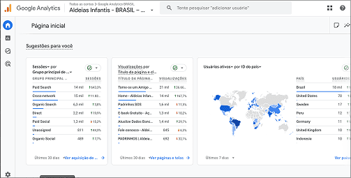
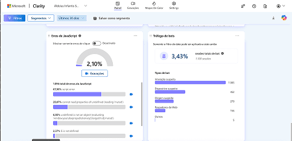
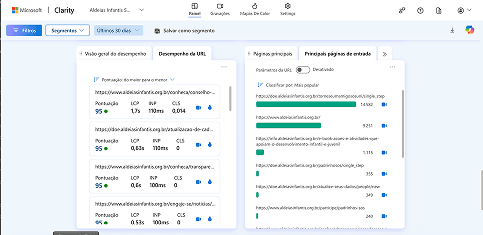
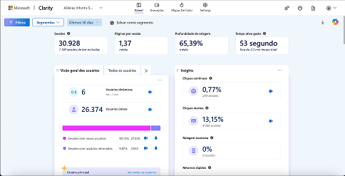
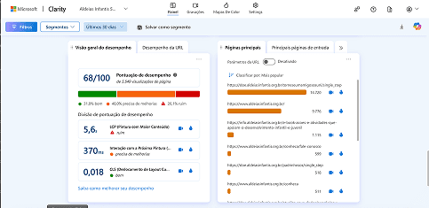
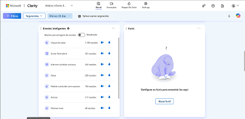
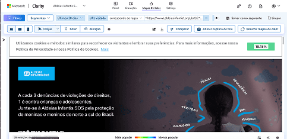

Nonprofit · Accessibility · Aldeias SOS Brasil
Aldeias SOS Brasil
A clearer, more accessible way to find programs and support.

Helping people navigate a growing organization
SOS Children’s Villages supports children, young people and families in more than 130 countries. In Brazil, its growing range of programs and services made it harder for visitors to understand what support was available and how to access it.
Make essential information easier to find
Content had grown without a consistent, built around user needs structure. Fragmented navigation, buried information and accessibility barriers made it harder to find programs, support resources and organizational information.
Usability results
Rebuilding around audience needs
I led discovery and validation in partnership with stakeholders, content teams and engineers. Interviews, a content audit, competitive benchmarking, heuristic review and accessibility assessment helped identify the most important journeys and barriers.
Selected screens
Information architecture and key journeys.
Selected visuals from the original project.







Clearer paths to programs and support
The redesign organized information around user goals, simplified navigation and addressed accessibility barriers across key journeys. In usability testing, 89% completed tasks without assistance, 81% rated the experience intuitive or very intuitive, and the mobile experience received a 4.6/5 rating.
Back to homeNext case · Education · Student services